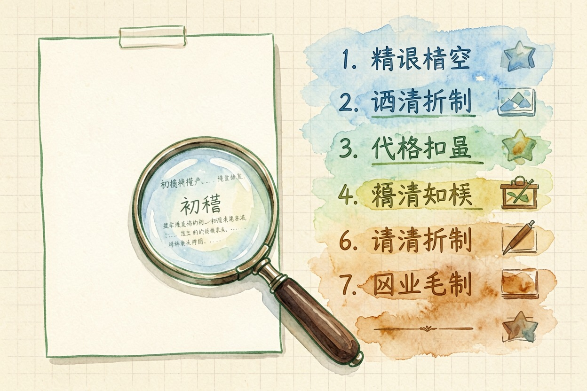
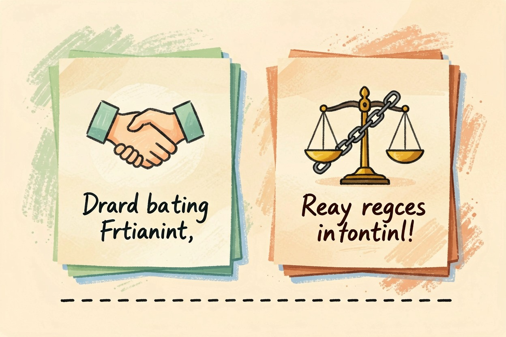
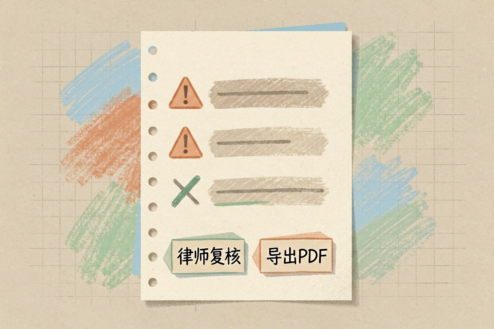

用 AI 起草合同？能做什么、不能做什么 — Learntide
起草合同最怕遗漏关键条款。把 AI 当草稿助手，能省下大量重复劳动，但签字前仍有红线不能碰。
用 AI 起草合同前先明确它能做什么

用 AI 起草合同，第一步不是打开软件。先想清楚你要的是哪一类文件。普通的买卖协议、租赁约定、保密条款，结构都比较固定。这类文本最适合交给它。
模板再好，也要贴合你的实情。照搬别人的合同，坑的是自己。
AI 的长处是把重复格式快速拼出来。它能根据你给的要素，生成一版像样的初稿。你不用从空白页开始写，省下的时间可以做更重要的事。
但它生成的东西只是草稿。它不知道你这笔交易的真实背景。它也不知道对方可能在隐瞒什么。把它的输出当成参考，而不是结论。
新手常犯的错误，是以为生成完就结束了。其实生成只是最前面的一步。后面读、改、核，才是真正费心思的地方。
适合交给 AI 的合同初稿类型

格式标准的协议最适合。比如兼职劳务协议，条款大同小异。再比如简单的合作约定，各方权责清楚时也能交给它。日常的小额采购，用它可以省掉找模板的时间。
保密协议也很合适。这类文本在市面上模板很多。AI 套用起来又快又稳，出错概率相对低。
但涉及房产、股权、婚姻的文书要小心。这类内容牵扯利益大。一个疏漏，后果会很严重。
金额高、期限长的合同，也不建议完全交给 AI。它容易写出看起来合理、实则对你不利的句子。你签了才发现有问题，就晚了。
用提示词写出可用的第一版草稿
给的信息越具体，草稿越能直接用。下面这段提示词可以照着改，把要素换成你自己的。
请你扮演一位合同起草助手。
我要起草一份《设备租赁协议》，租赁方是甲方，出租方是乙方。
核心要素：
1. 标的物：两台型号 A 的打印机
2. 租期：2026-09-01 到 2027-08-31
3. 月租金：人民币 800 元，每月 5 日支付
4. 押金：相当于一个月租金
5. 违约：逾期付款按日加收 0.5%
请输出条款式初稿，语言通俗，不要使用模糊措辞。要素写全，AI 才不会乱编。改稿时一句句读，发现它加了你没要求的内容就删掉。多改几轮，稿子会越来越贴你的需求。
AI 有时会自作主张补条款。比如你没提付款方式，它自己加了一段。这种地方要格外留意。
用 AI 起草合同容易踩的三个坑

第一个坑是凭空编造。AI 可能写出一条根本不存在的法律依据。你若不核实，就把它当真了。
第二个坑是套错模板。你说要租赁合同，它给了买卖合同的架子。结构不对，后面全白费。
第三个坑是忽略管辖和争议解决。很多 AI 草稿漏掉这一条。真出事时，你才发现该去哪起诉都没写。
还有人把网上的旧模板混着用。版本乱，条款互相打架。这种稿子比空白页还危险。
把 AI 草稿变成能签字的版本
草稿写完，先自己通读一遍。把空白项、金额、日期都填实。别留方括号占位符，也别写"待定"糊弄过去。小额协议也不能马虎，错一处就够麻烦。
再请专业人士看一眼。律师能发现你忽略的风险点。这一步省不得，尤其涉及钱的时候。
最后把它存成正式文档。导出 PDF，双方签字盖章。别把 ai起草合同 生成的草稿直接拿去签字，正式落地仍要专业把关。 !尾图核心要点回顾
{kind=link}
本文信息核对于 2026-08-08。AI 产品的价格、免费额度与功能变动频繁，实际以各工具官网当前说明为准。